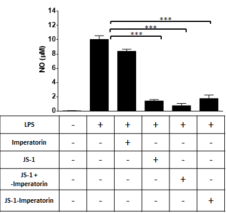
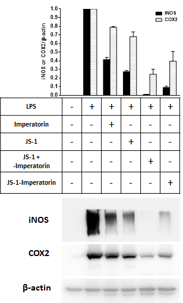

Drug Carrier
According to Experiment 4 - in vitro, the structure of nanoparticles can be easily endocytosed by macrophages and thus achieve the targeting goal, while not penetrating other cells.
We then came up with an idea that maybe we can utilize the central hydrophobic part in JS-1, with the protection of hydrophilic PEG, to carry hydrophobic small molecular drugs into macrophages.
To further examine our hypothesis, we used “Imperatorin” in following experiments [1]. It’s a hydrophobic small molecule immune suppressor that can block the expression of iNOS and COX2 protein and inhibit the production of NO.
We induced acute hepatitis in mice by LPS/D-Gal, and took the macrophages of mice as a model. The six groups we designed were as follows: control group (Non-LPS-induced), control group (LPS-induced), Imperatorin only, JS-1 only, JS-1 covering Imperatorin, and JS-1-Imperatorin copolymers. We then measured their NO concentration (Figure. I-1, by Griess assay), and iNOS and COX2 protein expressions (Figure. I-2, by Western blot).
 Figure. I-1: Griess assay: only JS-1, JS-1 covering Imperatorin, and JS-1-Imperatorin copolymer groups are significant, decreasing obviously. Moreover, the NO production concentration decreased the most in the JS-1 covering Imperatorin group.
 Figure. I-2: Western Blot (compared with β-actin), the iNOS and COX2 protein expression decreased the most in JS-1 covering Imperatorin group.
Based on the data, the “JS-1 covering Imperatorin” group exhibits best suppression effect. We can tell from the result that JS-1 acts well as a drug carrier. It carries hydrophobic small molecular drugs into the cell while both of their structure still remain the intact, therefore achieving better drug efficacy.
We believe that this design could be applied to enhance drug efficacy and control HuR and other pathogenicity genes or proteins at the same time.
Reference:
- Huang GJ, Deng JS, Liao JC, Hou WC, Wang SY, Sung PJ, Kuo YH., Inducible nitric oxide synthase and cyclooxygenase-2 participate in anti-inflammatory activity of imperatorin from Glehnia littoralis., J Agric Food Chem. 2012 Feb 22;60(7):1673-81. doi: 10.1021/jf204297e. Epub 2012 Feb 8.